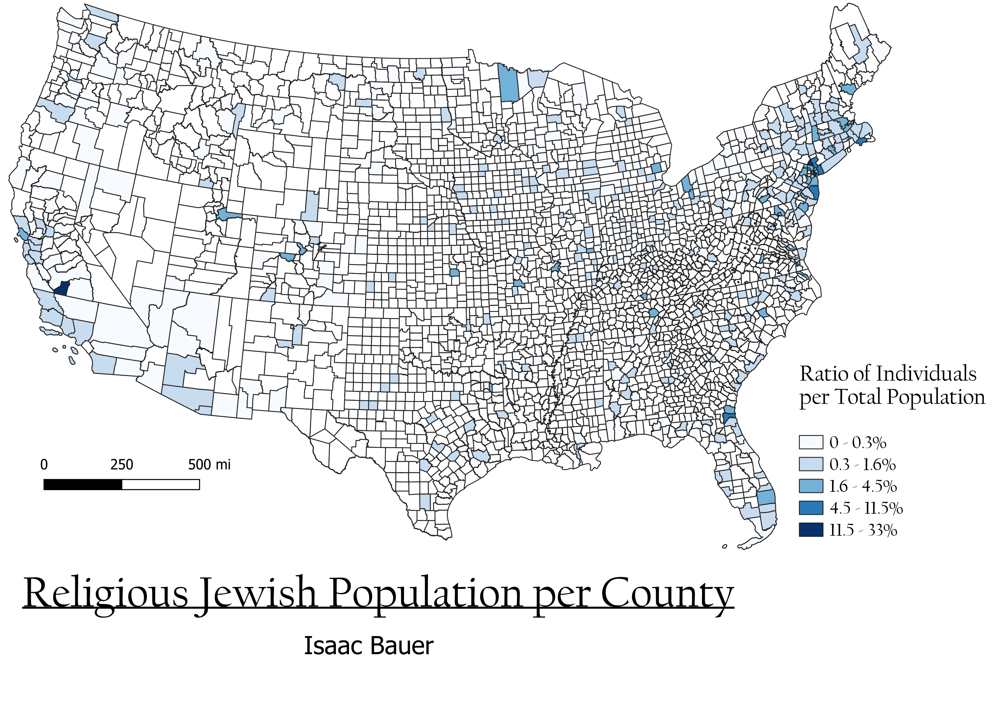

United States Counties
The following map depicts the ratio of religious Jewish individuals within the total population of each county in the United States. EPSG 32614 was chosen because it is a central UTM zone. Alaska and Hawaii were omitted from the map because no county in either state had above a 0.3% observant Jewish population. I chose this topic because I grew up in a secular Jewish household, so I have always been curious about the demographics of religious vs nonreligious Jews, especially in the United States. Additionally, my family has lived in many states, in many different regions of the country, including several midwestern states, so I was curious about how the Jewish population varies from region to region, as well as on a county level.

Vector layer
geoJSON
Cleaned CSV
CSV
Data
Association of Religion Data Archives